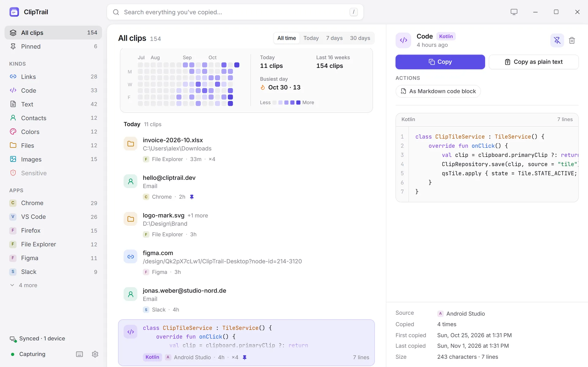
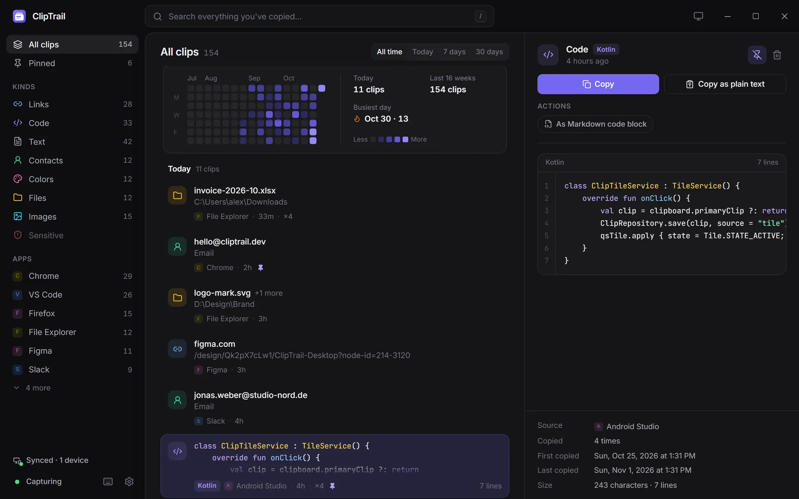

Search & timeline
Two ways to find a clip: search for something you remember about it, or browse back to when you copied it.


Search
Press / or Ctrl F in the dashboard, or just start typing in the picker.
- Substring matching. Search finds your text anywhere inside a clip, even in the middle of a word:
ploymatchesdeploy.sh,4f2amatches a commit hash. It's backed by a SQLite full-text index with trigrams, so it stays instant over years of history. - What's searched: the clip's text, the paths of copied files, and the name of the app it came from.
- What isn't: sensitive clips are never indexed, and the pixels of images aren't searched (searchable screenshots via OCR are on the roadmap).
- Esc clears the search and filters.
Filters
Filters combine with search and with each other:
Everything, or only the clips you pinned with Ctrl P.
Links, Code, Text, Contacts, Colors, Files, Images, Sensitive, each with a count.
The apps you copy from most, such as Chrome, VS Code or Slack. Click again to clear.
All time, Today, 7 days or 30 days, at the top of the timeline.
Timeline
Clips are listed newest first and grouped by day (Today, Yesterday, then dates), each with its source app, how long ago it was copied, and how many times you've copied it. The list is virtualised, so scrolling stays smooth with tens of thousands of clips.
Select a clip to see it in full in the preview pane: syntax-highlighted code, link details, colour swatches, image previews, file lists. From there you can copy it, copy it as plain text, run a smart action, pin it or delete it (Del, with Ctrl Z to undo).
Calendar heatmap
Above the timeline, a heatmap shows how much you copied each day over the last 16 weeks, with today's count, the 16-week total and your busiest day.
- Click a day to jump the timeline to that day. A "Oct 28 and earlier" chip shows where you are; remove it to go back to now.
- Combine it with a kind or app filter: "the code I copied from VS Code around the 14th".
From the terminal
The same search is available as clipd search <text>, with --kind, --limit and --json. See the CLI reference.